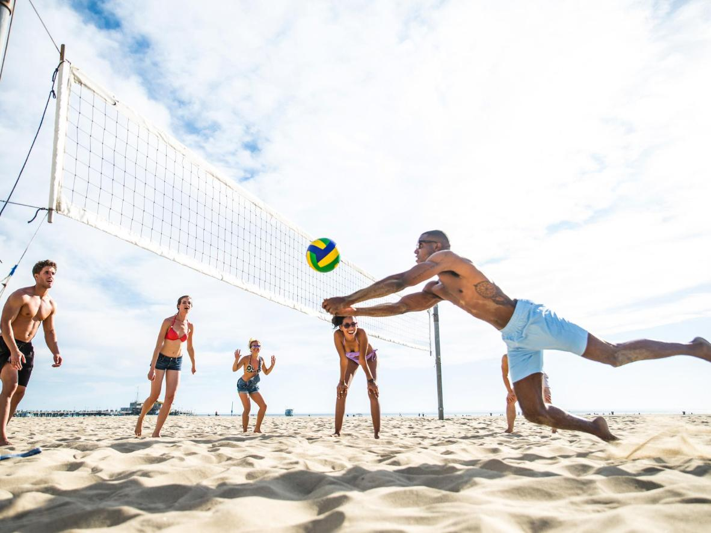

Tidigare Studenter
Robin har utforskat många länder tack vare utlandsstudier. Han har varit överallt från England till Australien och han rekomenderar verkligen att ta chansen!
-Mina tips är: hitta närmaste klubb och vänner kommer på köpet!
Jag älskar att vara nära sina nära och kära men ville samtidigt uppleva ny kultur och testa på hur det är att studera utomlands. Jag valde att åka till England med min bästa vän över en termin.
-Mina tips är: åk med någon som står dig nära så det finns en trygghet.
Jag ville helst inte åka utomlands i början men då kursen jag ville gå enbart erbjöds i Australien insåg jag att det skulle vara värt det.
-Mina tips är: vara öppen för möjligheter. Även om det är läskigt först så öppnar det nya dörrar för framtiden. 